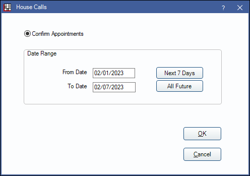

HouseCalls Bridge
TeleVox's HouseCalls delivers automatic appointment reminders.
In Program Links, double-click on HouseCalls.

Website: https://televox.com/.
To enable the bridge:
- Check the Enabled box.
- Double-click on a row in Additional Properties to change settings.
- Use the PatNum (enter 0) or ChartNum (enter 1) as the patient ID.
- Verify the Export Path.
- Set up a clickable bridge button.
- Under Add a button to these toolbars, highlight where to display the button.
- Enter the Text on button.
- (Optional) Import an image to show on the button (22 x 22 pixels).
- If using clinics, click Hide Button for Clinics. Select which clinics the button should display on.
Technical Details
The data is always exported to a file called Appt.txt in the Export Path specified. The file is a simple comma-delimited text file which has the following columns:
LastName
FirstName (or we substitute Preferred Name if exists)
PatientNumber (Can be PatNum or ChartNumber, depending on what user selected)
HomePhone
WorkNumber
EmailAddress
SendEmail (this will be true if email address exists.)
Address
Address2 (although they did not offer this as an option)
CityStateZip
ApptDate
ApptTime
ApptReason (procedures descriptions-user can't edit)
DoctorNumber (for the Doctor, we currently use the patient primary provider. Otherwise, we would run into trouble with appointments assigned to a specific hygienist.)
DoctorName
IsNew
PatientWirelessPhone
When you click on the HouseCalls button, you get to select a date range of appointments to confirm:
Click OK to create the text file. The HouseCalls software will upload the text file sometime in the middle of the night.